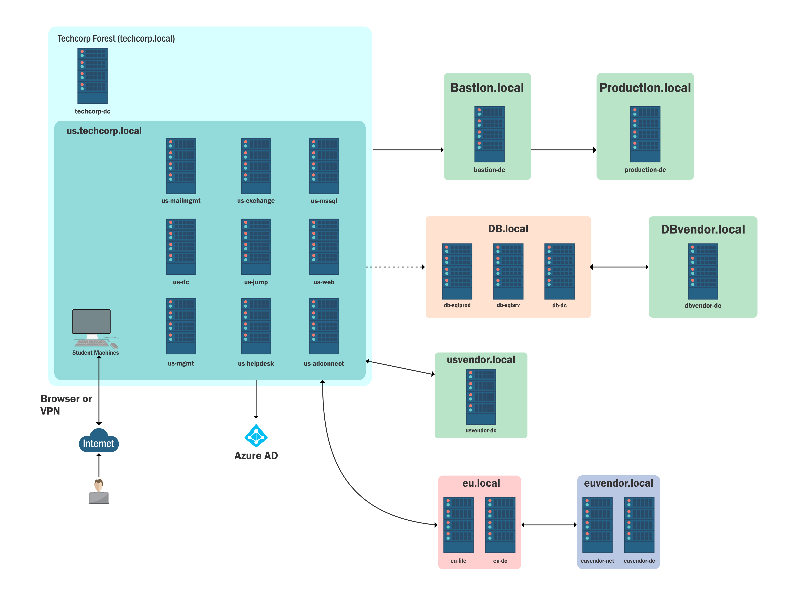
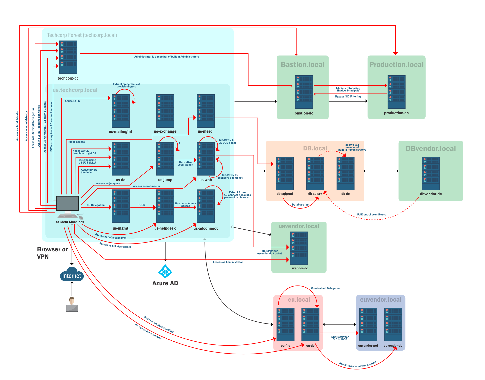

The CRTE (Certified Red Team Expert) course is focused on attacking and defending Active Directory environments using an assume breach methodology. This comprehensive guide covers various advanced attack techniques used by red teams to compromise and persist in enterprise environments.
Parts
- Introduction
- Enumeration
- Privilege Escalation
- Kerberoasting attack
- Privilege Escalation - Targeted Kerberoasting
- Privilege Escalation - LAPS Attack
- Dumping LSASS Credentials
- Privilege Escalation - gMSA Attack
- LSASS Attack With MDE Bypass
- Pass The Certificates Attack
- Privilege Escalation - Unconstrained Delegation
- Privilege Escalation - Constrained Delegation
- Privilege Escalation - RBCD
- Domain Persistence - Golden Ticket attack
- Domain Persistence - Silver Ticket Attack
- Domain Persistence - Diamond Ticket Attack
- Domain Persistence - Skeleton Key Attack
- Domain Persistence - Sapphire Ticket Attack
- Domain Persistence - AdminSDHolder attack
- Cross Domain Attacks - ADCS Attacks
- Shadow Credentials - Abusing User Object
- Cross Domain Attacks - Unconstrained Delegation to Enterprise Admin
- Cross Domain Attacks - Azure AD Integration PHS
- Cross Domain Attacks - Child to Forest Root - SID History Trust Key Abuse
- Cross Domain Attacks - Child to Forest Root - SID History KRBTGT Hash Abuse
- Cross Forest Attacks - Kerberoast Attack
- Cross Forest Attacks - Constrained Delegation with Protocol Transition
- Cross Forest Attacks - Unconstrained Delegation
- Cross Forest Attacks - Trust Key Abuse to Access Shared Resources
- Cross Forest Attacks - Injecting SID History to Bypass SID Filtering
- Trust Abuse - MSSQL Servers Database Links
- Cross Forest Attacks - Foreign Security Principals & ACLs
- Cross Forest Attacks - Abusing PAM Trust
- Cross Forest Attacks - Trusting to Trusted - Trust Key
- Cross Forest Attacks - Abusing Trust Transitivity